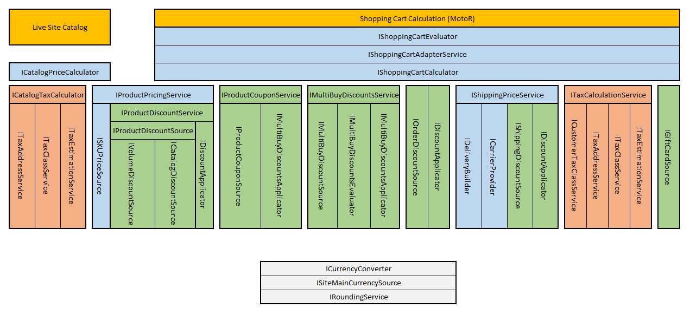

E-commerce customization model
The E-commerce Solution allows developers to customize the default functionality. Different parts of the system can be modified using one of the following customization approaches:
Create and register custom implementations of various interfaces
Inherit from default classes, override specific methods, and register your derived class
Calculation interface overview
The following diagram shows the most important interfaces that the E-commerce API uses to:
Calculate prices displayed in catalogs on the live site (when using appropriate transformation methods or the default built-in web parts)
Evaluate and calculate the values of shopping carts and orders

Diagram showing the customizable interfaces used by the calculation logic of the E-commerce Solution
The structure of the API allows you to create your own implementations of one or more interfaces and register them instead of the defaults. The overall calculation engine then integrates your customizations while keeping the default behavior for the remaining functionality.
For details and customization examples related to specific parts of the calculation logic, see the corresponding pages:
Custom providers
You can modify or extend certain parts of the system's functionality by inheriting from default classes (typically Provider classes) and overriding their virtual methods. Examples related to e-commerce functionality include:
See also: Customizing providers
Other customizations
To integrate payment gateways or services that are not available by default, you need to create Custom payment gateways.
If you wish to use Google Analytics to measure and analyze shopping activity on your website (product impressions, purchases, etc.), see: Integrating Google Analytics Enhanced Ecommerce
You can also use the general Kentico features to add custom functionality that fulfills your specific requirements. For example, add custom applications (modules), develop custom web parts, etc.